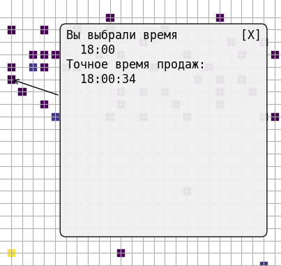
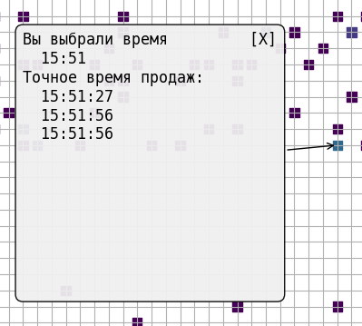
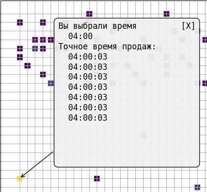
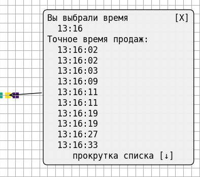
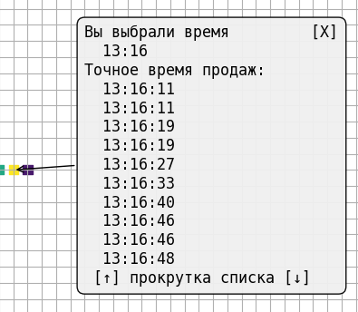
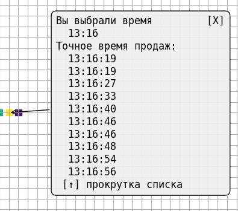

По центру окна расположено основное поле графика . По вертикальной оси находится шкала часов от 00 до 23 ,
с разметкой по четным часам . По горизонтальной оси - шкала минут от 00 до 59 размеченная по пять минут .
Т.е. имеем для наблюдения полное количество минут в сутках . Каждая минута окрашена в свой цвет , согласно
расположенной справа от графика цветовой шкале . Шкала размечена снизу вверх цифрами и цветом по количеству
покупок . Цветовая шкала масштабируется для каждого графика по максимальному числу покупок в минуте . Если
максимальное суточное число 7 покупок в минуту - желтый цвет обозначает 7 покупок в минуту , Если же
максимальное число покупок для какой то минуты в наблюдаемых сутках - 100 . То желтый цвет на графике будет
соответствовать этим 100 покупкам . Чем меньше покупок в минуте - тем темнее обозначается её цвет . Цветная
шкала с цифровыми маркерами помогает сопоставить цвет и цифровое количество покупок . Минуты в которых не
были зафиксированы покупки - на графике не отображаются . И участия в интерактивности не принимают .
Интерактивное взаимодействие с графиком
Для тех кому мало уже имеющихся данных , и хочется более подробно узнать всю суточную информацию графика
Предусмотрен режим так называемой интерактивности . Когда мы щелкаем мышкой по цветной минуте в графике -
программа выводит новое окно - "Аннотацию" , содержащую посекундный список покупок для выбранной минуты .



Примеры работы с "Аннотацией"
Выше показаны три примера аннотаций с разным количеством покупок в минуте . Стрелка показывает к какой
именно минуте относится данная аннотация . Закрыть окно можно щелкнув по крестику в правом верхнем углу
окна . Список покупок представляет собой посекундную запись каждой покупки . Максимальное число видимых
строк покупок в окне аннотации не превышает десяти позиций . При количестве строк в списке более десяти -
включается программная эмуляция прокрутки . В самой нижней строке появляется надпись "Прокрутка списка" ,
со стрелками вверх и вниз по краям надписи . Стрелки учитывают позицию видимой части списка в окне , и
при достижении начала или конца списка - соответствующая стрелка убирается из строки . что означает
невозможность прокрутки списка в эту сторону . Примеры картинок объясняющие принцип расположены чуть ниже



Выше показаны три примера со списком длинной 16 позиций . Для списков любой длинны принцип листания
остается неизменным . Одно нажатие на стрелку вызывает смещение списка вниз или вверх на одну позицию
и позволяет нам пролистывать весь список от первой до последней записи .
Зачем нужна кнопка "Очистить память
Несмотря на изоляцию данных для переменных и запускаемую автоматическую очистку переменных при загрузке
файлов для построения графика - иногда имеет место быть перекрестное формирование данных через функцию
обработки кликов мышки , которая так же отвечает за загрузку списков продаж в аннотацию . Для минимизации
возможных глюков было решено ввести в программу дополнительно принудительную очистку данных и памяти .
Рекомендуется , после работы с одним графиком и перед загрузкой следующего - очищать данные через кнопку
Обработка и показ статистических данных
Вернуться на главную страницу
Загрузка и сохранение файлов
Интерфейс программы